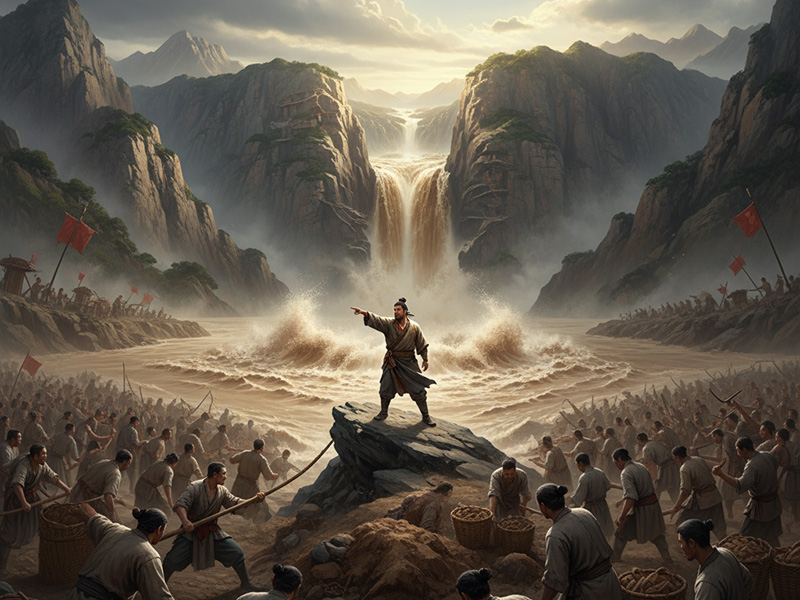
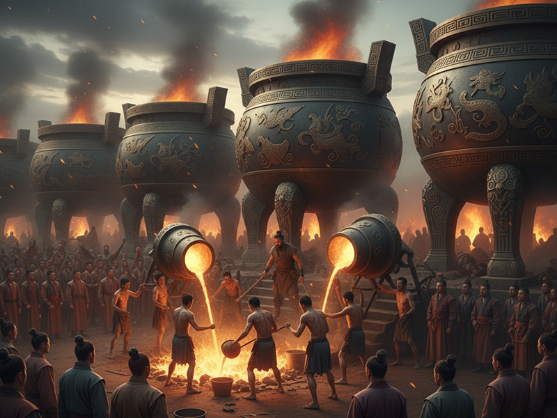

尊号
大禹 / 夏禹 / 神禹
地位
夏朝开创者 / 治水圣王
时代
新石器时代末期 / 夏朝初期
功绩
治理洪水 / 划定九州
姓氏
姒姓，名文命
都城
阳城
“卑宫室而尽力乎沟洫。” — 孔子评禹
神祇解读

临危受命 · 鲧之子
禹，是黄帝的玄孙，其父鲧曾受尧帝之命治水。鲧采用“堵”的方法，九年而无功，最终被诛。在洪水滔天之际，舜帝任命禹继承父业，继续治水。禹吸取了父亲失败的教训，改“堵”为“疏”，以疏导河川为核心方略，开启了十三年艰苦卓绝的治水征程。
三过家门 · 十三载治水
为治理洪水，禹披荆斩棘，跋山涉水，手持测量工具，走遍天下，规划水道。他与百姓一同风餐露宿，在泥水中奋战。传说他治水十三年，三次经过自己的家门口，听到妻子的呻吟和孩子的哭声，却都因治水大业紧迫而没有踏入家门。这种公而忘私的奉献精神，为他赢得了万民的敬仰，被尊称为“大禹”。


划定九州 · 家天下之始
洪水被平定后，禹的威望达到了顶峰。他重新将天下划分为九州，并在涂山大会诸侯，铸造九鼎以象征天下一统。舜因此将帝位禅让于禹。然而，禹逝世后，他的儿子启破坏了禅让制，自行继位，建立了中国第一个世袭制王朝——夏。禹，因此成为了上古禅让时代的最后一位圣王，也是“家天下”的开启者。
人文之功
💧
疏导洪水
以疏导代替围堵，成功平定肆虐中原的洪水，使人民得以安居乐业。
🗺️
划定九州
在治水过程中丈量天下，将华夏大地划分为九州，奠定了中国行政区划的基础。
👑
建立夏朝
接受舜的禅让，并最终由其子启开创了中国第一个世袭制王朝，从“公天下”走向“家天下”。
鼎
铸造九鼎
在涂山大会诸侯，收九州之金铸造九鼎，成为王权至高无上、国家统一昌盛的象征。
📅
颁行夏历
改定历法，以建寅之月为正月，即后世所称的“夏历”或“农历”，沿用至今。
神祇谱系
解大为的笔记：“禹是十大始祖神格链条的终点，也是一个全新纪元的起点。在他身上，神性退去，人性凸显到了极致。他不再依靠神力，而是凭借十三年的胼手胝足，用双脚丈量大地，用双手重塑山河。他是文明史上第一位伟大的‘总工程师’。更重要的是，禹是一个巨大的历史分野：他是最后一位因功绩受禅的圣王，却又是第一位开启血脉传承的王朝始祖。他无意中用自己的丰功 والمع绩，为‘公天下’的理想时代画上了句号，开启了数千年关于权力、家族与命运的宏大叙事。他是神话时代的落幕人，也是历史时代的启幕者。”